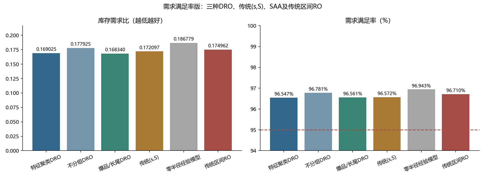
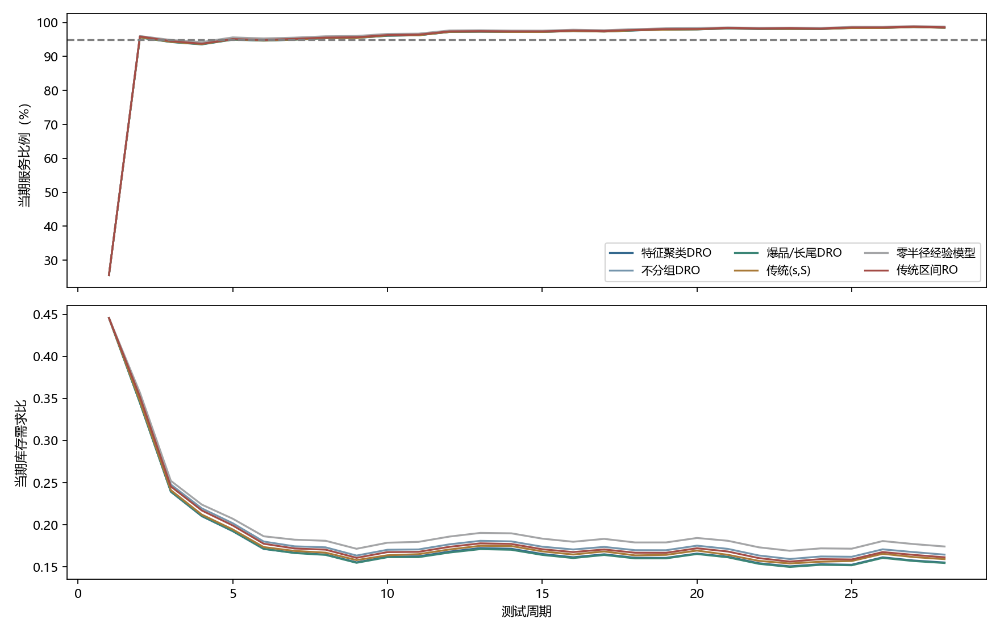

完整6000商品×28天测试。服务要求：需求满足率≥95%。
库存需求比＝累计期末库存/累计需求，越低越好。RO采用需求区间最坏情形，Γ仅在训练集选取。
| 方法 | 需求满足率 | 正库存天数比例 | 库存需求比↓ | 损失需求 |
|---|---|---|---|---|
| 特征聚类DRO | 96.5467% | 76.4310% | 0.169025 | 3124004.0 |
| 不分组DRO | 96.7806% | 74.7048% | 0.177925 | 2912454.0 |
| 爆品/长尾DRO | 96.5615% | 76.7173% | 0.168340 | 3110694.0 |
| 传统(s,S) | 96.5722% | 76.1512% | 0.172097 | 3101002.0 |
| 零半径经验模型 | 96.9426% | 80.9131% | 0.186779 | 2765893.0 |
| 传统区间RO | 96.7100% | 74.2548% | 0.174962 | 2976314.0 |

